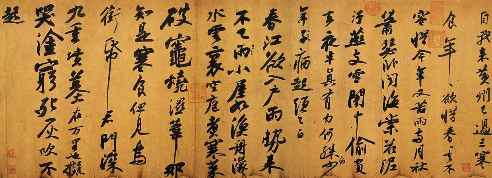

纵观1800多年中国行书发展历史，建立了不朽丰碑的是三位杰出的书法家，他们是东晋王羲之、唐代颜真卿、北宋苏轼，他们的行书代表作分别是《兰亭序》、《祭侄季明文稿》、《黄州寒食诗》，誉之为“天下三大行书”法帖。
上述三大行书法帖，因其辞、书皆佳，且均为文稿草稿，情切意真。曹宝麟谓：“他们正是在无心于书的创作状态下任情恣性地挥洒，才不期而然地达到了最佳的感人效果”，天下三大行书，“这一推崇世无间言”。
还有人将“天下三大行书”作对比说：《兰亭序》是雅士超人的风格，《祭侄帖》是至哲贤达的风格，《寒食帖》是学士才子的风格。它们先后媲美，各领风骚，可以称得上是中国书法史上行书的三块里程碑。
中国书法第一帖：《兰亭序》。
《兰亭序》是东晋右军将军王羲之51岁时的得意之笔，记述了他与当朝众多达官显贵、文人墨客雅集兰亭、修稧事也的壮观景象，抒发了他对人之生死、修短随化的感叹。崇山峻岭之下，茂林修竹之边，乘带酒意，挥毫泼墨，为众人诗赋草成序文，文章清新优美，书法遒健飘逸。被历代书界奉为极品。
宋代书法大家米芾称其为“中国行书第一帖”。王羲之因此也被后世尊为“书圣”。后人在研究其书法艺术时赞誉颇多：“点画秀美，行气流畅”，“清风出袖，明月入怀”，“飘若浮云，矫若惊龙”，“遒媚劲健，绝代所无”，“贵越群品，古今莫二”。
确实如此，传说王羲之以后也曾再书《兰亭序》，但均逊色于原作，所以《兰亭序》原稿一直为王羲之视为传家之宝，为王氏后代收藏，传至王羲之第七代时被唐太宗李世民“骗”入朝廷，唐太宗李世民得《兰亭序》后，曾诏名手赵模、冯承素、虞世南、褚遂良等人钩摹数个乱真副本，分赐亲贵近臣，之后民间也广为临摹，但无一胜过王羲之的原作，所以《兰亭序》真迹被唐太宗视为稀世珍品。只可惜这样一件书法珍品，到了唐太宗手里，他爱不忍释，临死时竟命人用它来殉葬。从此后世人便看不到《兰亭集序》的真迹了。这更让后世对《兰亭序》原作崇敬不已，冠以中国书法第一帖的美名实在无可争议。

【原文】
兰亭集序
永和九年，岁在癸（guǐ）丑，暮春之初，会于会稽（kuàijī）山阴之兰亭，修禊（xì）事也。群贤毕至，少长咸集。此地有崇山峻岭，茂林修竹，又有清流激湍（tuān），映带左右。引以为流觞（shāng）曲（qū）水，列坐其次，虽无丝竹管弦之盛，一觞（shang)一咏，亦足以畅叙幽情。
是日也，天朗气清，惠风和畅。仰观宇宙之大，俯察品类之盛，所以游目骋（chěng）怀，足以极视听之娱，信可乐也。
夫人之相与，俯仰一世。或取诸怀抱，晤言一室之内；或因寄所托，放浪形骸（hái）之外。虽趣（qǔ）舍万殊，静躁不同，当其欣于所遇，暂得于己，怏然自足，不知老之将至。及其所之既倦，情随事迁，感慨系（xì）之矣。向之所欣，俯仰之间，已为陈迹，犹不能不以之兴怀。况修短随化，终期于尽。古人云：“死生亦大矣。”岂不痛哉！
每览昔人兴感之由，若合一契，未尝不临文嗟（jiē）悼，不能喻之于怀。固知一死生为虚诞，齐彭殇(shāng)为妄作。后之视今，亦犹今之视昔，悲夫！故列叙时人，录其所述。虽世殊事异，所以兴怀，其致一也。后之览者，亦将有感于斯文。
【译文】
永和九年，即癸丑年，三月之初，（名士们）在会稽郡山阴县的兰亭聚会，为的是到水边进行消灾求福的活动。许多有声望有才气的人都来了，有年轻的，也有年长的。这里有高大的山和险峻的岭，有茂密的树林和高高的竹子，又有清水急流，（在亭的）左右辉映环绕。把水引到（亭中）的环形水渠里来，让酒杯飘流水上（供人们取饮）。人们在曲水旁边排列而坐，虽然没有管弦齐奏的盛况，（可是）一边饮酒一边赋诗，也足以痛快地表达各自幽雅的情怀。
这一天，天气晴朗，和风轻轻吹来。向上看，天空广大无边，向下看，地上事物如此繁多，这样来纵展眼力，开阔胸怀，穷尽视和听的享受，实在快乐啊！
人们彼此相处，一生很快就度过。有的人喜欢讲自己的志趣抱负，在室内（跟朋友）面对面地交谈；有的人就着自己所爱好的事物寄托情怀，不受任何约束，放纵地生活。尽管人们的爱好千差万别，或好静，或好动，也不相同，（可是又都有这样的体验：）当他们对所接触的事物感到高兴时，一时间很自得，快乐而自足，竟不觉得衰老即将到来；待到对于自己所喜爱的事物感到厌倦，心情随着当前的境况而变化，感慨油然而生，以前感到欢快的事顷刻之间变为陈迹了，仍然不能不因此感慨不已，何况人寿的长短随着造化而定，最后一切都化为乌有。古人说：“死和生也是件大事啊！”怎能不悲痛呢？
每当我看到前人发生感慨的原由，（跟我所感慨的）如同符契那样相合，总是面对着（他们的）文章而嗟叹感伤，心里又不明白为什么会这样。（我）这才知道，把生和死同等看待是荒诞的，把长寿和短命同等看待是妄造的。后人看待今天，也像今人看待从前一样，真是可悲啊！因此我—一记下参加这次聚会的人，抄录了他们的诗作。尽管时代不同情况不同，但人们的情致却是一样的。后代的读者读这本诗集也将有感于生死这件大事吧。
【作者简介】
王羲之（303—361年），汉族，字逸少，号澹（dàn）斋，身长七尺有余（约1.83米），原籍琅琊临沂（今属山东），后迁居山阴（今浙江绍兴），官至右军将军，会稽内史，是东晋伟大的书法家，被后人尊为“书圣”。他的儿子王献之书法也很好,人们称他们两人为“二王”，另一个儿子王凝之官至左将军。因曾任右军将军，世称“王右军”、“王会稽”。代表作品有：楷书《乐毅论》、《黄庭经》、草书《十七帖》、行书《姨母帖》、《快雪时晴帖》、《丧乱帖》、行楷《兰亭集序》等。精研体势，心摹手追，广采众长，冶于一炉，创造出“天质自然，丰神盖代”的行书，被后人誉为“书圣”。其中，王羲之书写的《兰亭集序》为书家所敬仰，被称作“天下第一行书”。王羲之对真书、草、行主体书法造诣都很深。今人刘铎对王羲之的书法曾称赞道：“好字唯之（之，即王羲之）”。
中国书法第二帖：《祭侄季明文稿》。

【名称】祭侄季明文稿
【作者】颜真卿
【年代】唐代
【书体】行书
【材质】麻纸墨迹
【规格】纵28.3厘米，横75.5厘米
【字数】23行，234字
【收藏】台湾台北故宫博物院。
《祭侄季明文稿》是唐代颜真卿追祭从侄颜季明的草稿。行书，23行，234字。书于公元758年（唐乾元元年），时年五十。朱关田《中国书法史·隋唐五代卷》谓：《祭侄文稿》“书之奇绝，论者以为《兰亭序》之后惟此为高，故有‘天下第二行书’之誉”。
此文稿追叙了常山太守颜杲卿父子一门在安禄山叛乱时，挺身而出，坚决抵抗，以致“父陷子死，巢倾卵覆”（《祭侄季明文稿》），取义成仁，英烈彪炳之事。祭悼其侄颜季明更见疾痛惨怛，哀思郁勃。颜季明，即颜杲卿第三子，颜真卿堂侄，当年其父揭旗反正，与颜真卿共同声讨安禄山叛乱时，正是由他往返于常山、平原之间传递消息，使两郡联结，形成犄角之势，齐心效忠王室。其后常山郡失陷，颜季明横遭杀戮，正当英年，且归葬时已失身躯，仅存头颅。
颜杲卿和颜季明父子遇难之后，颜真卿曾派人寻得颜季明的头骨；他对兄侄为国家壮烈牺牲和颜氏家族的“巢倾卵覆”，忠义满腔，悲愤异常，所以，颜真卿援笔作文之际，抚今追昔，萦纡忿激，血泪交进，悲愤交加，情不能自禁。用笔之间情如潮涌，不计工拙，一气呵成，常常写至枯笔，更显得苍劲流畅，其英风烈气，倾见于笔端，悲愤激昂的心情流露于字里行间。颜真卿此文，正义凛凛，有不忍卒读之感，故黄庭坚《山谷题跋》说：“鲁公《祭侄季明文稿》文章字法皆能动人。”
杲gǎo1. 日出明亮：“其雨其雨，～～出日。”2. 明亮；光明：“如海之深，如日之～。”3. 高远：“是故民气～乎如登于天，杳乎如入于渊。”4. 白。5. 姓。
【版本】
《祭侄季明文稿》传世有二：
一是停云馆所刻祭侄文稿，有陈绎曾、陈深、文徵明三跋，与清卞永誉《式古堂书画汇考》所载相同；
二是墨迹本，明张丑《清河书画舫》云，《祭侄文稿》定当以鲜于枢、张晏跋尾本为真迹。徐邦达《古书画过眼要录·晋隋唐五代宋书法》谓：“明文氏《停云馆帖》所刻一本，与此不同，当是伪迹。”
【原文】（含涂乙字）
维乾元元年、岁次戊戌、九月庚午朔、三日壬申。第十三（原书“从父”二字圈去）叔，银青光禄（脱“大”字）夫、使持节、蒲州诸军事、蒲州刺史、上轻车都尉、丹杨县、开国侯真卿。以清酌庶羞祭于亡侄赠赞善大夫季明之灵曰。惟尔挺生。夙标幼德。宗庙瑚琏。阶庭兰玉。（下圈去“方凭积善”四字）。每慰人心。方期戬谷。何图逆贼闲衅。称兵犯顺。尔父竭诚。（原有被涂去二行四字）。常山作郡。余时受命。亦在平原。仁兄爱我。（下圈去一“恐”字）。俾尔传言。尔既归止。爰开土门。土门既开。凶威大蹙。（下圈去“贼臣拥众不救”六字）。贼臣不（原一“拥”字圈去）救。孤城围逼。父（下圈去一“擒”字）陷子死。巢倾卵覆。天不悔祸。谁为荼毒。念尔遘残。百身何赎。呜乎哀哉。吾承天泽。移牧河关。（下圈去“河东近”三字）。泉明（原书“东之”二字圈去）比者。再陷常山。（下圈去一字）。携尔首榇。及兹同还。（下圈去“亦自常山”四字）。抚念摧切。震悼心颜。方俟远日。（下及边圈去五字）。卜尔幽宅。（下圈去一字）魂而有知。无嗟久客。呜呼哀哉！尚飨。
爰yuán，1. 于是；2. 改易，更换；3. 曰，为（wéi ）；
遘gòu，1. 相遇；2. 古同“构”，构成。
榇chèn，1. 棺材。2. 古代多以梧桐木做棺，故为梧桐的别称。
衅xìn，（釁，或下面一火一血）。1. 古代用牲畜的血涂器物的缝隙：～钟。～鼓。2. 缝隙，感情上的裂痕，争端：～隙。～端（争端）。挑～。寻～。3. 以香熏身：～浴。
歲（岁）；縣（县）；穀（谷）；圖（图）；
原文：维乾元元年，岁次戊戌。
注释：“维”：语助词，常用于句首，有时也用在句中。“乾元”：为唐肃宗李亨年号，“元年”，相当公元758年。“岁次戊戌”：岁次也叫年次。古代以岁星（木星）纪年。古人将天空的赤道部位分作12等分，每等分中以某些恒星为标志。木星正好每年走一等分，12年走一周。每年岁星（木星）所值的星次与其干支称为岁次。该年的干支为戊戌。
译文：时在唐肃宗乾元元年（公元758年），农历是戊戌年。
原文：九月庚午，朔三日壬申。
注释：古人不仅以干支纪年，也以干支纪月和纪日。纪月法从丙寅开始，60个月（五年）为一周期。纪日亦以甲子为第一日，60日为一周期。“朔”：月亮运行到地球与太阳之间，地面看不到月亮时称朔，一般以农历初一为朔，十五称望。又朔又有初、始等义。这里可解为初三日。
译文：农历九月为庚午，三日壬申
原文：第十三叔，银青光禄（大）夫。
注释：颜真卿兄弟姐妹共十人，真卿排行第七。但其同祖兄弟有十五人，他排行第十三。“银青”：指银质印章和青色绶带。秦汉时期凡吏秩比在二千石以上者，皆可佩银印青绶。“光禄大夫”：原为郎中令的属官。汉武帝以后无固定职守，为散宫，相当于顾问。唐宋时期光禄大夫加银章青绶者为从三品文阶官。原帖“光禄大夫”之“大”字漏写，为笔误。
译文：（颜季明的）第十三叔、佩带银印章和青绶带的光禄大夫。
原文：使持节、蒲外诸军事、蒲州刺史。
注释：“使持节”：为刺史的加衔。加此衔后有诛杀中级以下官吏之权。“使持节”为持节中的最高一级，次为“持节”，再次为“假节”。“刺史”：隋唐时期刺史为一州之行政长官。刺史本兼军民两政。然汉代以后管军之职权实际已废，故唐代管军事要另加街，颜真卿任薄州刺史后，加州防御使之衔，以示兼管诸军事。故其州刺史的全称就是“使持节、蒲州诸军事、蒲州刺史”。其他州刺史情况也大致如此。
译文：加使持节、蒲州诸军事之蒲州刺史。
原文：上轻车都尉、丹阳县开国侯真卿。
注释：“轻车都尉”本为汉代特别兵种将领的称号。唐宋时为勋官。自上柱国至武骑尉共设十二转，第八转为“上轻车都尉”。七转为轻车都尉。轻车都尉下还有骑都尉等。“开国侯”为爵名。唐代将爵位分作九等，“开国县侯”为第六等。候前多冠以县名，但食邑不一定由该县供给。颜真卿的丹阳县开国侯的名衔也为他出任蒲州时所赐。
译文：授勋上轻车都尉和晋爵为丹阳县开国侯的颜真卿
原文：以清酌庶羞家于亡任赠赞善大夫季明之灵。
注释：“清酌庶羞’：酌，指酒，也指斟酒。请酌，指菲薄、便宜的酒类。羞，通馐，食物。庶羞，指普通的食物。“赞善大夫”：大夫，古代在国君之下有卿、大夫、士三级。隋唐以后以大夫为高级阶官称号；“赞善”为赞美之词。颜季明为颜杲卿第三子，曾担任乃父和颜真卿之间的联络工作，后被安禄山杀害。已见前面说明。乾元元年，他被朝廷追赠赞善大夫。
译文：现在以清薄的酒类和家常的食物来祭扫赞善大夫颜季明侄儿的亡灵。
原文：惟尔挺生，夙标幼德。宗庙瑚琏，阶庭兰玉，每慰人心。
注释：“惟”：语助词，用在句首。“挺”：特出、出众。“宗庙瑚琏”：宗庙中盛黍稷的祭器，夏代称瑚，殷代称琏。这里指颜季明已成为颜氏宗庙中的重要角色。“阶庭兰玉”：以芝兰（香草）玉树（仙树）比喻人们的优秀子弟。《世说新语•言语》载：谢安问诸子侄曰：“子弟亦何预人事，而正欲使其佳？”谢玄答道；“譬如芝兰玉树，欲使其出于阶庭耳。”
译文：惟有你（季明）生下来就很出众，平素已表现出少年人少有的德行。你好像我宗庙中的重器，又好像生长于我们庭院中的香草和仙树，常使我们感到十分欣慰。
原文：方期戬谷，河图逆贼闲衅，称兵犯顺。
注释：“戬谷”：指福、禄。戬，指福。谷，为粮食的总称。古代官俸以谷物计算，故可代禄位“闲”，同间。“称兵犯顺”：以逆犯顺，指起兵作乱。
译文：正期望（季明）能够得到幸福和作个好官，谁想到逆贼（安禄山）乘机挑衅、起兵造反。
原文：尔父竭诚，常山作郡。余时受命，亦在平原。
译文：你的父亲（颜杲卿）竭诚尽力，在常山担任太守。我（颜真卿）那时接受朝廷任命，也在平原都担任太守之职。
原文：仁兄爱我，俾尔传言，尔既归止，爰开土门，土门既开，凶威大蹩。
注释：“俾”：使也。“归止”；止，助词。《诗.齐风•南山》：“既回归止．曷又怀止。”“爰千土门”：爰，乃，于是。土门，今河北井泾，时为战略要地。“蹩”：促、迫。局促不安。
译文：仁兄（杲卿）出于对我的爱护，让你给我传话（即担任联络）。你既已回到常山，于是土门被夺回。土门打开以后，凶逆（安禄山）的威风大受挫折。
原文：贼臣不救，孤城围逼。父陷子死，巢倾卵复。
注释：“贼臣不救”：如前所述．指颜杲卿收复土门以后，曾派泉明到长安报喜并求救兵，被太原尹王承生劫留，拥兵不救。“孤城围逼”三句：指安禄山回兵常山，颜杲卿孤立无援，终于城破被俘。颜季明和颜氏家族以及颜杲卿等先后被杀。造成“复巢之下，安有完卵”的悲惨结局。
译文：贼臣（王承业）拥兵不救，致使（常山）孤城被围攻陷氏父亲（颜杲卿）和儿子（颜季明以及家族人等）先后被杀。好像一个鸟巢被从树上打落．鸟卵自然也都会摔碎，那里还会有完卵存在！
原文：天不悔祸，谁为荼毒！念尔遘残，百身何赎？呜呼哀哉！
注释：“荼毒”：荼指苦菜，毒药毒虫。按：此两句似乎在隐喻朝廷的成败和用人不当。“遘”；遭遇。“呜呼哀哉”：对死者的叹词。呜呼，表示叹息。哀：悲痛。哉：语助词，表示感叹。初见《左传.哀公十六年》。孔丘卒条。
译文：天啊！面对这样的惨祸，难道你不感到悔恨！是谁制造了这场灾难？念及你（季明）遭遇这样的残害（被杀后只留头部，身体遗失）．就是一百个躯体哪能赎回你的真身？呜呼哀哉！
原文：我承天泽，移牧河关。泉明比者，再陷（至）常山，携尔首榇，及兹同还。
注释：“河关”：河流和关隘。此指蒲州，时颜真卿调任蒲州刺史。他在《蒲州刺史谢上表》中说：“此州之地，尧舜所都。表里山河，古称天险”可见该地自古就是重要关口。“比”；亲近。“榇”：原指梧桐树，多用于制作棺材，此处指棺木。首榇：指盛装季明首级的棺木“兹”：此。原文“陷”字误书，应为“至” 字。
译文：我承受是上的恩泽，派往河关（蒲州）为牧。亲人泉明，再至常山，带开盛装你首级的棺木，一同回来。
原文：抚念摧切，震悼心颜！
译文：抚恤、思念之情摧绝切迫，巨大的悲痛使心灵震颤，容颜变色。
原文：方俟远日，卜尔幽宅。魂而有知，无嗟久客。
注释：“幽宅”：阴间的住宅．指坟墓。
译文：请等待一个遥远的日子，选择一块好的墓地。你的灵魂如果有知的话，请不要埋怨在这里长久作客。
原文：呜呼哀哉！尚飨。
注释：“尚飨”；飨，通享。又指以酒食款待。此处指祭祀时希望死者能享用这些祭品。
译文：呜呼哀哉！请享用这些祭品吧！
中国书法第三帖：《黄州寒食帖》。
{kind=link}
【名称】《寒食帖》
又名《黄州寒食诗帖》或《黄州寒食帖》
【年代】北宋
【书体】行书
【规格】纵：34厘米，横：119.5厘米。
【材质】书法帖，长卷，纸本。
【文物现状】现藏于台北故宫博物院
【法帖背景】
元丰三年（1080）二月，苏轼四十五岁，因宋朝最大的文字狱“乌台诗案”受新党排斥，贬谪黄州（今湖北黄冈）团练副使，在精神上感到寂寞，郁郁不得志，生活上穷愁潦倒，第三年四月，也就是宋神宗元丰五年（公元1082年）作此两首寒食诗，书写此卷的时间大约在翌年，或元丰七年离开黄州以后。元符三年（1100）是卷收藏者蜀州张氏取之邀黄庭坚观赏，并书一则题跋，与原迹可谓互为辉映。
《寒食帖》是苏轼行书的代表作。这是一首遣兴的诗作，是苏轼被贬黄州第三年的寒食节所发的人生之叹。诗写得苍凉多情，表达了苏轼此时惆怅孤独的心情。此诗的书法也正是在这种心情和境况下，有感而出的。通篇书法起伏跌宕，光彩照人，气势奔放，而无荒率之笔。《黄州寒食诗帖》在书法史上影响很大，被称为“天下第三行书”，也是苏轼书法作品中的上乘。
【书法释文】
自我来黄州，已过三寒食，年年欲惜春，春去不容惜。今年又苦雨，两月秋萧瑟。卧闻海棠花，泥污燕支雪。闇中偷负去，夜半真有力。何殊病少年，病起须已白。春江欲入户，雨势来不已。小屋如渔舟，蒙蒙水云里。空庖煮寒菜，破灶烧湿苇。那知是寒食，但见乌衔纸。君门深九重，坟墓在万里。也拟哭途穷，死灰吹不起。闇àn，同“暗”
庖páo， 厨房、厨师
【译文诠释】
自从我来到黄州，已经度过三次寒食节了。每年都惋惜着春天残落，却无奈春光离去并不需要人的悼惜。今年的春雨绵绵不绝，接连两个月如同秋天萧瑟的春寒，天气令人郁闷。在愁卧中听说海棠花谢了，雨后凋落的花瓣在污泥上显得残红狼藉。美丽的花经过雨水摧残凋谢，就像是被有力者在半夜背负而去，叫人无力可施。这和患病的少年，病后起来头发已经衰白又有何异呢？
春天江水高涨将要浸入门内,雨势袭来没有停止的迹象。小屋子像一叶渔舟,飘流在苍茫烟水中，厨房里空荡荡的,只好煮些蔬菜,在破灶里用湿芦苇烧着，本来不知道今天是什么时候,看见乌鸦衔着纸钱,才想到今天是寒食节。想回去报效朝廷,无奈国君门深九重,可望而不可及；想回故乡,但是祖坟却远隔万里，本来也想学阮籍作途穷之哭,但心却如死灰不能复燃。
【题跋史评】
黄庭坚在此诗后跋题曰：“东坡此诗似李太白，犹恐太白有未到处。此书兼颜鲁公、杨少师、李西台笔意。试使东坡复为之，未必及此。它日东坡或见此书，应笑我于无佛处称尊也”。
董其昌也有跋语赞云：“余生平见东坡先生真迹不下三十余卷，必以此为甲观”。
此卷用笔或清俊劲爽，或沉着顿挫，字体由小渐大，由细渐粗，有一种徐起渐快，突然终止的节奏。黄庭坚跋盛赞此卷于诗胜过李白，于书兼有唐、五代诸家之长。苏轼曾说：“我书意造本无法，点画信手烦推求。”又说：“天真烂漫是吾师。”实为此卷的写照。
【诗品鉴赏】
品其诗，苍劲沉郁，饱含着生活凄苦，心境悲凉的感伤，富有强烈的感染力；论其书，笔酣墨饱，神充气足，恣肆跌宕，飞扬飘洒，巧妙地将诗情、画意、书境三者融为一体，毕现苏轼“我书意造本无法,点画信手烦推求”、“自出新意，不践古人”的精髓。
诗稿诞生后，几经周转，传到了河南永安县令张浩之手。由于张浩与“苏门四学士”之一的黄庭坚相熟识，元符三年（1100年）七月，张浩携诗稿到四川眉州青神县谒见黄庭坚。黄庭坚一见诗稿，十分倾倒，又思及当时远谪海南的师友，北宋绍圣四年（1097年）被谪贬在惠州的苏轼责授琼州别驾。激动之情难以自禁，于是欣然命笔，题跋于诗稿曰：“东坡此诗似李太白，犹恐太白有未到处。此书兼颜鲁公、杨少师、李西台笔意。试使东坡复为之，未必及此。它日东坡或见此书，应笑我于无佛处称尊也”。黄庭坚论语精当，书法妙绝，气酣而笔健，叹为观止，与苏诗苏字并列可谓珠联璧合。书法鉴赏历代鉴赏家均对《寒食帖》推崇备至，称道这是一篇旷世神品。南宋初年，张浩的侄孙张演在诗稿后另纸题跋中说：“老仙（指苏轼）文笔高妙，灿若霄汉、云霞之丽，山谷（指黄庭坚）又发扬蹈历之，可谓绝代之珍矣”。自此，《黄州寒食二首》诗稿被称之为“帖”。明代大书画家董其昌则在帖后题曰：“余生平见东坡先生真迹不下三十余卷，必以此为甲观”。清代将《寒食帖》收回内府，并列入《三希堂帖》。乾隆十三年（1748年）四月初八日，乾隆帝亲自题跋于帖后“东坡书豪宕秀逸，为颜、杨后一人。此卷乃谪黄州日所书，后有山谷跋，倾倒至极，所谓无意于佳乃佳……”为彰往事，又特书“雪堂余韵”四字于卷首。
《黄州寒食诗帖》彰显动势，洋溢着起伏的情绪。诗写得苍凉惆怅，书法也正是在这种心情和境况下，有感而出的。通篇起伏跌宕，迅疾而稳健，痛快淋漓，一气呵成。苏轼将诗句心境情感的变化，寓于点画线条的变化中，或正锋，或侧锋，转换多变，顺手断联，浑然天成。其结字亦奇，或大或小，或疏或密，有轻有重，有宽有窄，参差错落，恣肆奇崛，变化万千。因为有诸家的称赏赞誉。《寒食帖》为“天下第三行书”。
【法帖轶事】
此卷同治年间（1862-1874）为广东人冯氏收藏，遭遇火灾，所以下端留下火灼痕迹。1922年为日本收藏家菊池惺堂收藏，约1949年归台北收藏家，1987年由台北故宫博物院购回。
到了近代，《寒食帖》的命运多舛。清咸丰十年（1860年）英法联军火烧圆明园，《寒食帖》险遭焚毁，旋即流落民间，为冯展云所得，冯死后为盛伯羲密藏，盛死后被完颜朴孙购得，曾于1917年在北京书画展览会上展出过，受到书画收藏界的密切关注。1918年转传到颜韵伯手中。当年12月19日为苏轼生日，颜韵伯作跋记录此事本末。1922年，颜韵伯游览日本东京时，将《寒食帖》高价出售给日本收藏家菊池惺堂。1923年9月，日本东京大地震，菊池家遭灾，所藏古代名人字画几乎被毁一空，当时，菊池惺堂冒着生命危险，从烈火中将《寒食帖》抢救出来，一时传为佳话。震灾之后，菊池惺堂将《寒食帖》寄藏于友人内藤虎斋中年年有余。1924年4月，内藤虎应菊池惺堂之请，作跋以记《寒食帖》从中国辗转递藏至日本之大概情形。第二次世界大战期间东京屡遭美国空军轰炸，《寒食帖》幸而无恙。
《寒食帖》流失海外一直使华夏子孙耿耿于怀。第二次世界大战刚一结束，国民政府外交部长王世杰私嘱友人在日本访觅《寒食帖》，当知下落后，即以重金购回，并题跋于帖后，略述其流失日本以及从日本回归中国的大致过程，千年国宝赖王世杰先生之力回归祖国，至今仍珍藏在台北故宫博物院。
十数年后，在台北的一次书画展中展出了一幅长达7.3米的《寒食帖》卷轴复制品，轰动一时，见者无不称奇。据说此种复制品只有10件，大部分被国际上享有盛誉的国家博物馆珍藏，有两件则下落不明。1975年前后，日本友人著名的“东坡迷”山上次郎花巨资买下了台北展厅中的最后一幅复制品。1985年11月2日，山上次郎率日本“东坡参观访问团”来到黄州东坡赤壁，出于对苏轼的景仰，也出于对东坡赤壁的钟情，山上次郎慨然将其高价购到的最后一幅《寒食帖》卷轴复制品捐赠给东坡赤壁管理处，这幅复制作品因而成为在中国大陆的唯一珍品。1995年，又经山上次郎倡议，在东坡赤壁修建了“中日友好之舍”，首次公开展出了该《寒食帖》卷轴复制品。作者简介苏轼（1037年1月8日－1101年8月24日），字子瞻，又字和仲，号“东坡居士”，世人称其为“苏东坡”。汉族，眉州（今四川眉山，北宋时为眉山城）人，祖籍栾城。北宋著名文学家、书画家、词人、诗人，美食家，唐宋八大家之一，豪放派词人代表。其诗，词，赋，散文，均成就极高，且善书法和绘画，是中国文学艺术史上罕见的全才，也是中国数千年历史上被公认文学艺术造诣最杰出的大家之一。其散文与欧阳修并称欧苏；诗与黄庭坚并称苏黄；词与辛弃疾并称苏辛；书法名列“苏、黄、米、蔡”北宋四大书法家之一；其画则开创了湖州画派。
【作者简介】
苏轼（1037年1月8日－1101年8月24日），字子瞻，又字和仲，号“东坡居士”，世人称其为“苏东坡”。汉族，眉州（今四川眉山，北宋时为眉山城）人，祖籍栾城。北宋著名文学家、书画家、词人、诗人，美食家，唐宋八大家之一，豪放派词人代表。其诗，词，赋，散文，均成就极高，且善书法和绘画，是中国文学艺术史上罕见的全才，也是中国数千年历史上被公认文学艺术造诣最杰出的大家之一。其散文与欧阳修并称欧苏；诗与黄庭坚并称苏黄；词与辛弃疾并称苏辛；书法名列“苏、黄、米、蔡”北宋四大书法家之一；其画则开创了湖州画派。